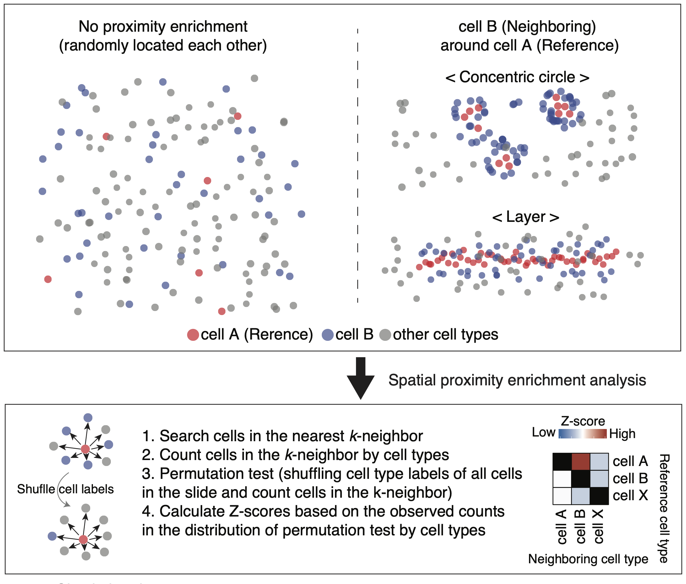
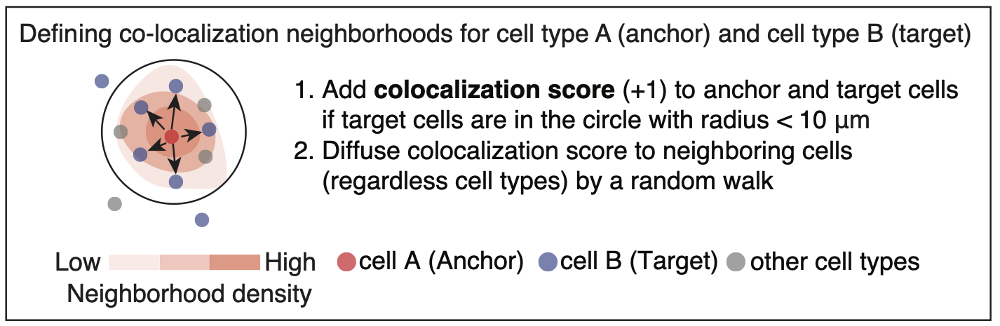

spatialCooccur is an R package for analyzing spatial co-occurrence and neighborhood interactions in spatial transcriptomics data. It is built around Seurat objects and provides tools to compute co-occurrence enrichment, perform permutation-based tests, visualize local interaction scores, and compare scores between disease groups across multiple samples.
Installation
You can install the development version from GitHub using:
# install.packages("devtools")
devtools::install_github("juninamo/spatialCooccur")Features
Single-sample analysis
- Simulate spatial transcriptomic layouts with
generate_sim() - Calculate neighborhood co-occurrence enrichment with
nhood_enrichment()(permutation-based z-score) - Compute radius-based co-occurrence ratio with
calc_co_occurrence_for_radius()/compute_co_occurrence_ratio() - Identify local interaction zones using
cooccur_local() - Detect connected interaction spots with
search_interaction_spot()
Multi-sample / disease-group comparison
- Generate multi-sample group-structured simulations with
generate_sim_groups() - Compute per-sample scores with
nhood_enrichment_per_sample(),cooccur_ratio_per_sample(),cooccur_local_per_sample(), orinteraction_spot_per_sample()(supports Seurat / list of Seurat / data.frame input, image- or patient-level aggregation) - Test cluster pairs between groups with
compare_groups()— Wilcoxon / Welch’s t / linear mixed model (lme4) / patient-blocked permutation - Visualize with
plot_group_delta_heatmap(),plot_pair_boxplot(),plot_volcano_groups()
Works with Seurat spatial objects out of the box.
Vignettes
-
vignette("disease_comparison", "spatialCooccur")— end-to-end disease-group comparison workflow with worked example -
vignette("algorithms", "spatialCooccur")— mathematical reference for every core function -
vignettes/case_control_tutorial.ipynb— case-control study with several images per patient: choosing the score, patient-level testing (Wilcoxon / LMM / blocked permutation), pseudoreplication, covariates, and power -
vignettes/segmentation_free_tutorial.ipynb— experimental segmentation-free analysis of transcript coordinates: cross pair correlation of marker gene sets, a random-feature log-Gaussian Cox process model (after Gundersen et al. 2021), case-control testing, and a worked Xenium mouse-brain example
1. Spatial Neighborhood Analysis (SNA)
To simulate spatial transcriptomic data and perform neighborhood enrichment analysis:
df = generate_sim(close_ratio = 1, n_types = 15, max_loc = 800, n_cells = 500, test_type = "circle", distance_param = 20, seed=1234)
# Run neighborhood enrichment analysis
nhood_enrichment_res <- nhood_enrichment(df, cluster_key = "cell_type", neighbors.k = 30, n_perms = 100, seed = 1234, n_jobs = 4)
nhood_enrichment_res$zscore2. Spatial Co-localization Score (sCLS)
To compute co-localization scores for cell interactions:
cooccur_local_df <- cooccur_local(df, cluster_x = "cell_type_1", cluster_y = "cell_type_2", neighbors.k = 30, radius = 30)
summary(cooccur_local_df)3. Disease-group comparison
To compare a spatial co-occurrence score between disease groups across multiple samples, compute per-sample scores and then test each cluster pair. The same *_per_sample() + compare_groups() pattern works for neighborhood enrichment z-score, radius-based ratio, local co-occurrence score, and interaction-spot counts.
# Simulate two groups, 3 samples each
df_groups <- generate_sim_groups(
n_samples_per_group = 3,
group_close_ratio = list(disease = 0.8, control = 0.2),
n_types = 5, n_cells = 400, test_type = "distribute",
distance_param = 15
)
# Per-sample z-scores (one row per sample x cluster_i x cluster_j)
per_sample <- nhood_enrichment_per_sample(
df_groups, sample_key = "sample_id", group_key = "group",
cluster_key = "cell_type", patient_key = "patient",
neighbors.k = 20, n_perms = 100
)
# Group comparison: method = "wilcox" (default) | "t" | "lmm" | "perm"
# - "lmm" uses lme4::lmer(value ~ group + (1 | patient))
# - "perm" runs a group-label permutation test, blocked by patient
# when patient_key is supplied
# Compare log2(observed / expected) rather than the z-score: z-scores grow
# with the number of cells per image, log2_oe does not.
res <- compare_groups(
per_sample, value = "log2_oe",
method = "wilcox", ref_group = "control", symmetric = TRUE
)
head(res)
# Visualize: per-pair effect heatmap, volcano, and per-sample boxplot
plot_group_delta_heatmap(res)
plot_volcano_groups(res, label_top = 5)
plot_pair_boxplot(
per_sample, value = "log2_oe",
pairs = data.frame(cluster_i = "cell_type_1",
cluster_j = "cell_type_2"),
add_p = TRUE, ref_group = "control"
)See vignette("disease_comparison", "spatialCooccur") for the full workflow, sanity-check heatmaps, and the algorithm description (math) for each compare_groups() method.
- Spatial Neighborhood Analysis

- Spatial Co-localization Score

📝 Citation
Jun Inamo, Roselyn Fierkens, Michael R. Clay, Anna Helena Jonsson, Clara Lin, Kari Hayes, Nathan Rogers, Heather Leach, Kentaro Yomogida. Spatial transcriptomics reveals immune–stromal crosstalk within the synovium of patients with juvenile idiopathic arthritis. JCI Insight 2026;11(1):e198074. doi:[10.1172/jci.insight.198074](https://doi.org/10.1172/jci.insight.198074)
Contact
For questions or issues related to this tutorial, please contact;
Name: Jun Inamo
Email: juninamo@keio.jp
Affiliation: Department of Microbiology and Immunology, Keio University School of Medicine
The data presented in the paper (spatial transcriptome data from JIA-synovoum) was generated by the Yomogida lab.